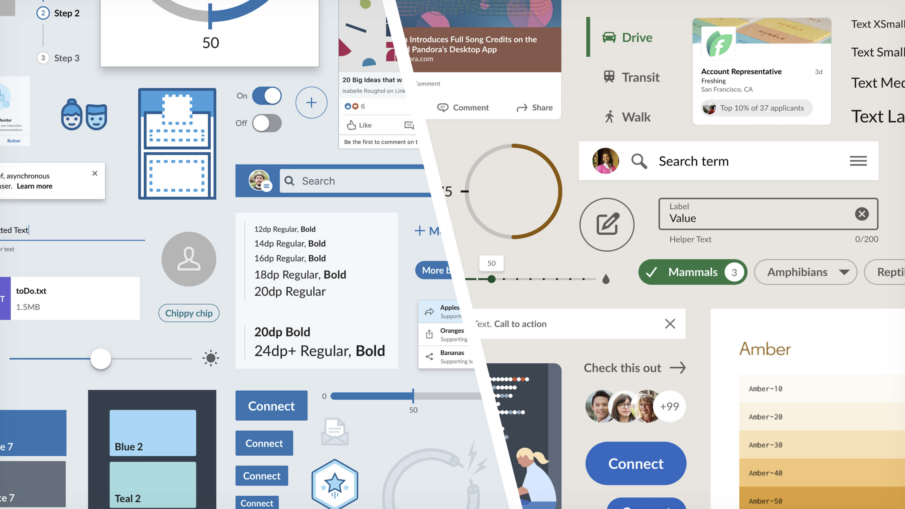
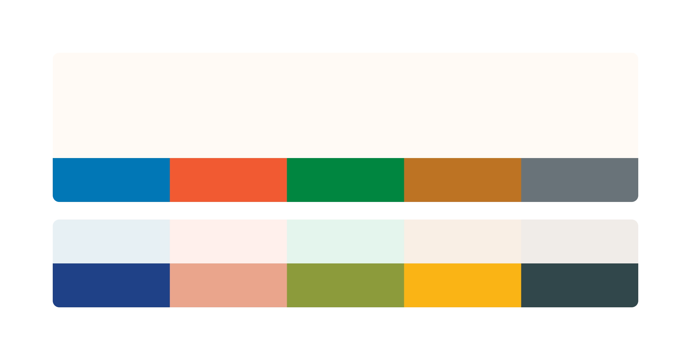
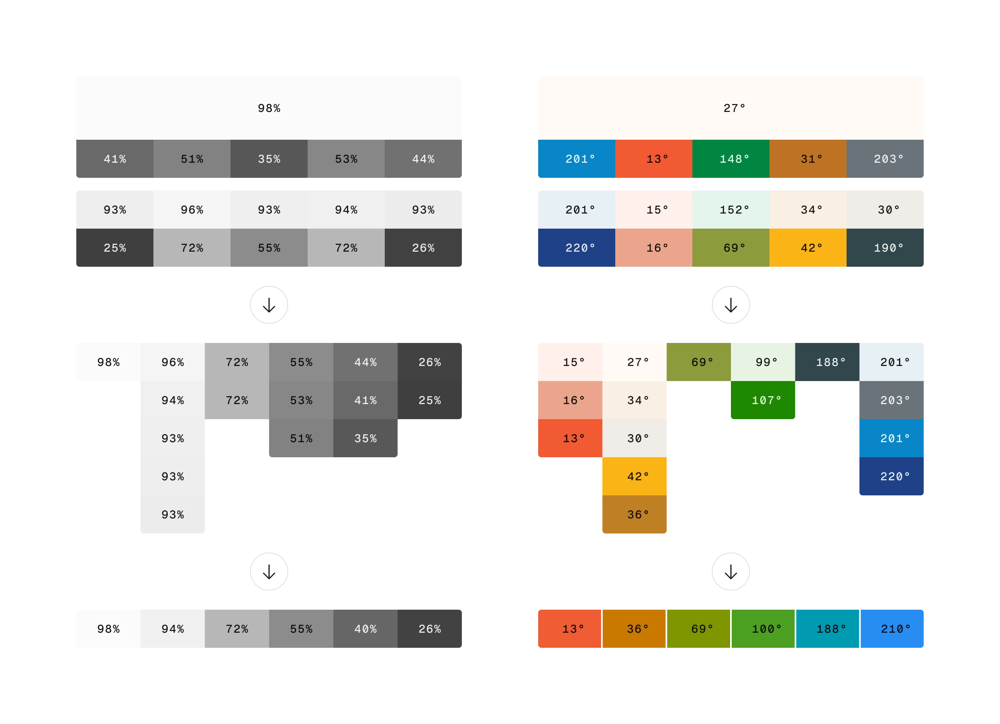
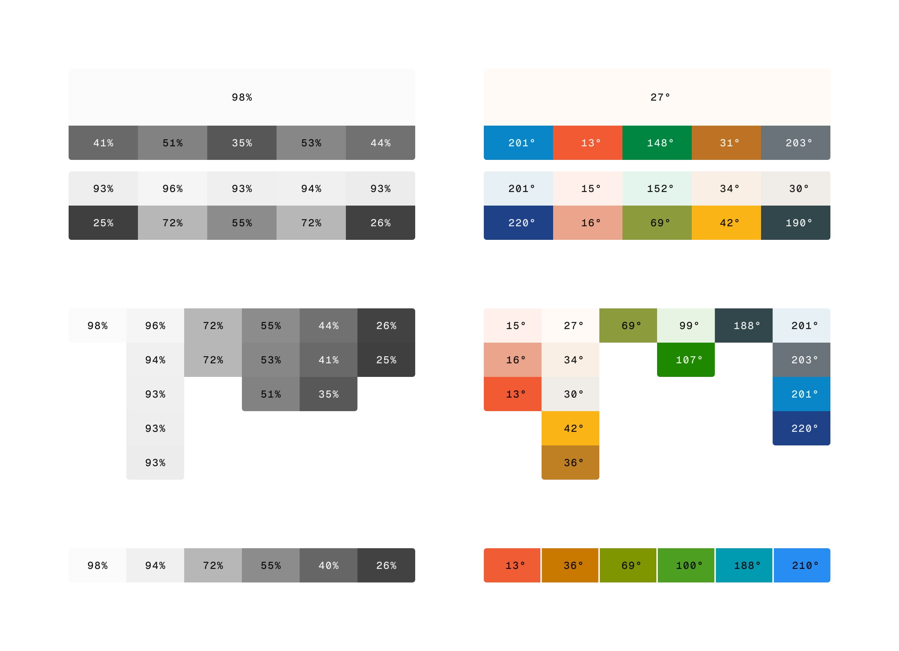
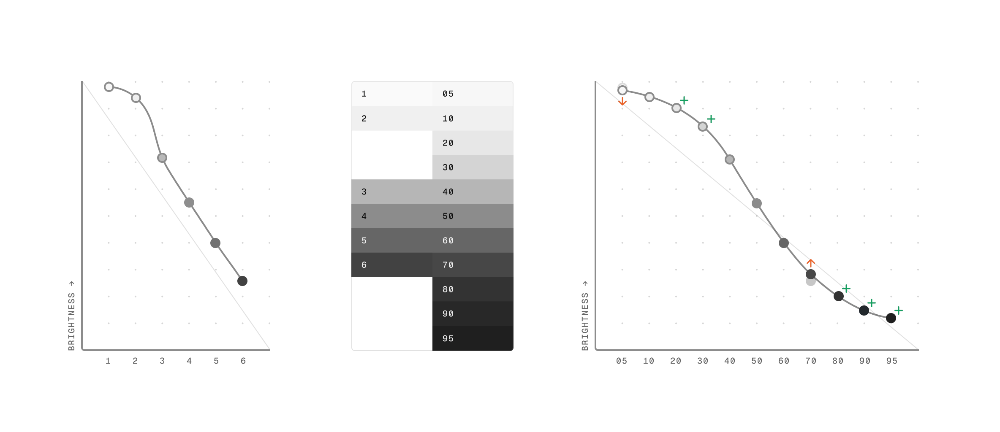
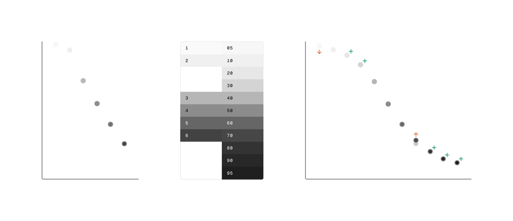
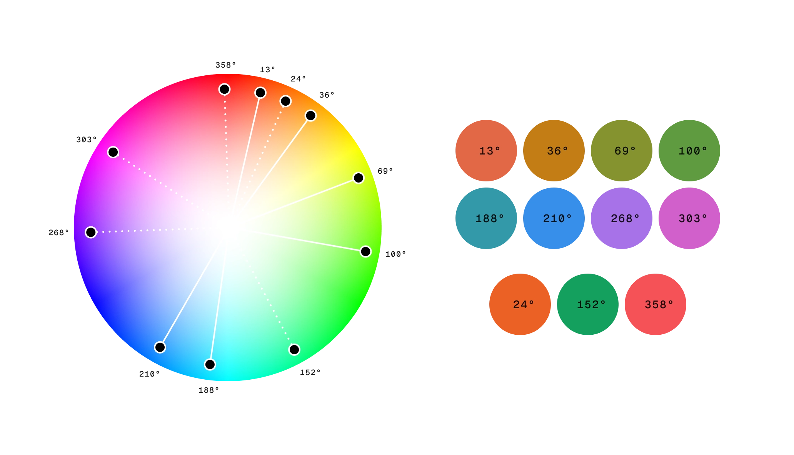
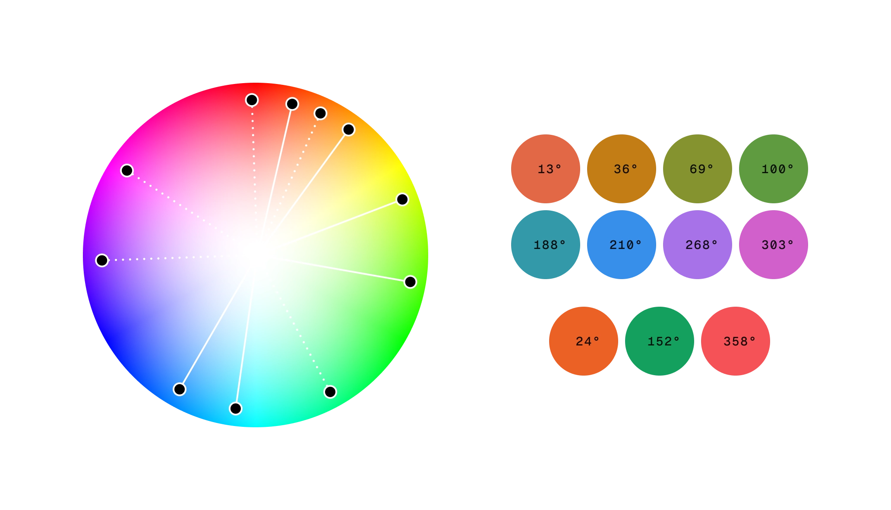

LinkedIn Mercado Design System
Systematic Color 1/X
Generating systematic color ramps
For more than a decade, LinkedIn's product design existed almost entirely in blue and grey. Building the Mercado color system meant constructing the infrastructure to change that: 20 color ramps, a semantic token layer, and a governing blueprint covering every surface across LinkedIn's product, brand, and marketing ecosystem.

The faceless blue man in a business suit
LinkedIn's brand guidelines had remained dormant, untouched for almost a decade by the time the LinkedIn’s first design system, Art Deco, finally launched in 2015. Blue was the only color with clear standing in those guidelines, which heavily influenced the color usage throughout all of LinkedIn’s products. Design teams knew everything felt cold and monotone, but experiments with vibrant color rarely survived stakeholder review. The strict guidelines gave critics an easy argument: it didn't feel like LinkedIn.
Then, in 2017, a new brand perception study was commissioned which discovered that people saw LinkedIn as "a faceless blue man in a business suit", and highlighted the difference in the values LinkedIn believed it stood for, and the what users were experiencing using the product. Those findings led to a brand identity refresh led by agency Wolff Olins, which in turn became the foundation the Mercado design language was built on.
I was tapped to advise on color and typography given my experience creating the Art Deco design language foundations. The Wolff Olins identity work was still in relatively early stages, but a single, preferred approach to color had been identified by all stakeholders. My first task would be to expand these colors to a set of systematic ramps that would hold up across every touchpoint: product UI, marketing, illustration, and beyond. The system work and the evolving brand direction would need to continuously inform one other, rather than one following the other.

Initial brand color analysis
The first step was to analyze the proposed brand colors to find commonalities in hue and brightness values. These initial values would then be expanded into a full contrast ramp which would be used for mapping individual color contrast levels across all ramps, and a complete set of hues used to differentiate each individual color ramp.
Using the HSB color model, each proposed brand color’s hue was sampled, with similar values arranged into groups, before consolidating that group to a single hue value. For brightness, the colors were first converted to greyscale, then each color’s brightness value sampled, grouped, and each group consolidated to a single value.


Tweaking the contrast curve
Generating a contrast curve is a crucial part of the process, defining a consistent scaling relationship between values across the entire range. A smooth curve that tapers off towards each end ensures significant differentiation between mid-range values (typically used for critical foreground UI elements), and those at the extremities (typically used for subtle background coloring within light or dark contexts).
When plotted, the initial six steps resulted in an erratic curve, so additional values were interpolated and added, then bezier smoothing applied to create a complete 9-step contrast ramp.
As product UI design explorations continued, it became more apparent that more steps were required at either end, so the contrast ramp expanded first to 10-steps, then finally 11.


Expanding the hue range
The initial six brand color hues were sufficient for the brand identity explorations, but didn’t quite cover the range required for in-product color applications, such as data visualization and illustration.
Two additional hues, purple and pink, were added to fill gaps in the color wheel. In order to avoid any positive or negative connotations with the brand hues, three more hues were added exclusively to cover system feedback such as success, error, and caution messages.


With a fully fleshed out contrast ramp and a complete range of brand hues, it ws time to move on to generating the individual brand color ramps.